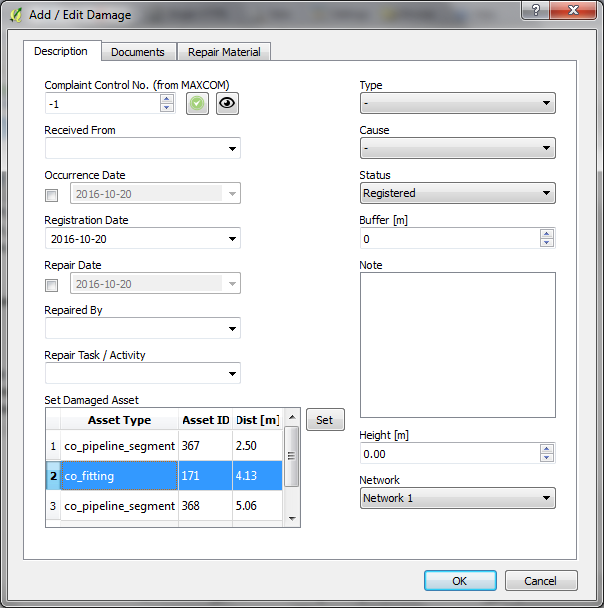
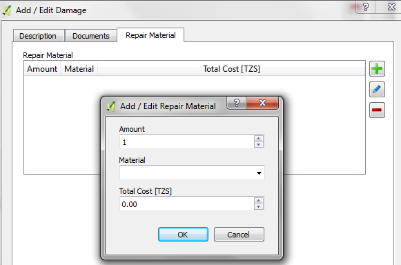

Add / Edit Damage
To add or edit a damage do the following steps:
- Mark the appropriate layer
as active layer in the layer list.
- Activate the Edit Asset
tool.
- Start an edit session activating the Toggle Editing - tool.
- Select the feature you want to add a new damage to or whose damages
you want to edit
- Choose the Damages
tab
- To add a new damage choose the following icon:
- To edit an existing damage choose the following
icon:
- To delete a damage choose the following
icon:

- To view damage data from Maxcom choose the
following icon:

Figure 1: Manage damage dialog
To add or edit a repair material do the following steps:
- Choose the Repair
Material
tab
- To add new repair material choose the following icon:
- To edit existing repair material select
the material in the list and choose the following
icon:
- To delete repair material select the
material in the list and choose the following
icon:

Figure 2: Add/edit repair material